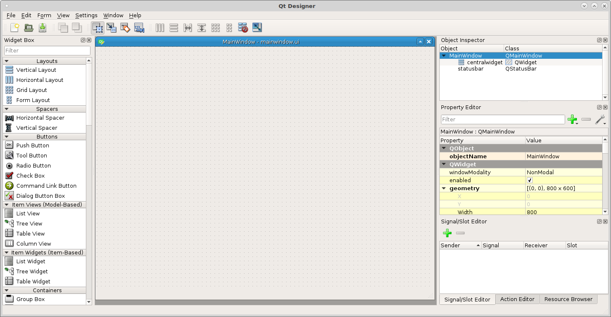
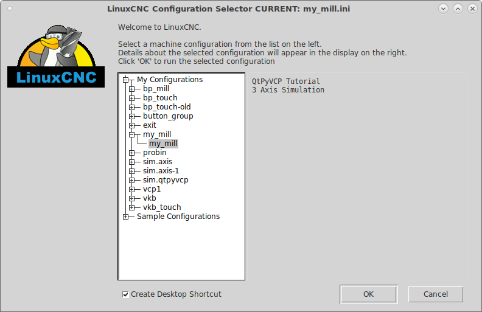
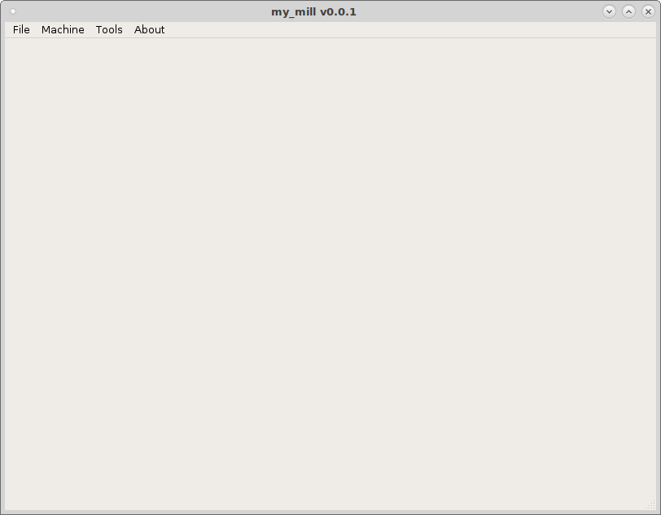

VCP Template¶
To get a basic framework for building a VCP after installing QtPyVCP from the Installation page clone the VCP Template which contains the basic framework for a QtPyVCP VCP.
Open a terminal and clone the VCP Template to your computer.
git clone https://github.com/kcjengr/vcp-template.git
This will put a copy of the VCP Template in the ~vcp-template directory. The best way to use this is to run the tutorial.sh script and create a copy with the name of your new VCP. In the terminal change to the vcp-template directory and run the script. Note the name can be letters, numbers and the underscore.
To create a LinuxCNC simulation configuration to test your template with answer yes to the prompt Copy the Tutorial LinuxCNC Configuration Files?
cd vcp-template
./tutorial.sh
{kind=link}
To edit the vcp template run editvcp and pick your template from the file
chooser.
{kind=link}
The vcp template will open up in the Qt Designer.
{kind=link}
The last step is the open the sample configuration up with LinuxCNC and create a desktop shortcut.
{kind=link}
Now you have a VCP template that can be tested with the simulation configuration and a desktop shortcut to launch the VCP.
{kind=link}